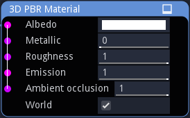

3D Material node¶
The 3D Material node describes a PBR material with Albedo, Metallic, Roughness, Emission, and Ambient Occlusion generated by shaders whose input coordinates are the 3D position in world or local space.
Inputs¶
The 3D Material node has inputs for all PBR channels.
Parameters¶
The 3D Material has parameters for all PBR channels.
Exports¶
The 3D Material has exports for the Godot, Unity and Unreal game engines. For Godot and Unity, ready to use materials are generated. For Unreal, a shader is generated, to be used in a Custom node.
Example images¶